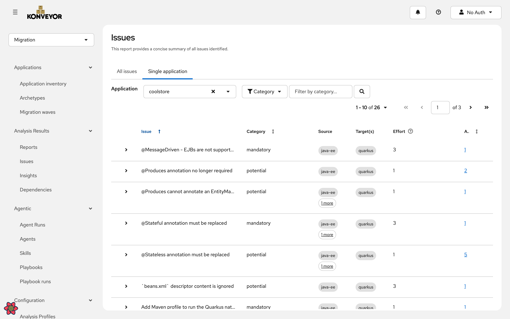
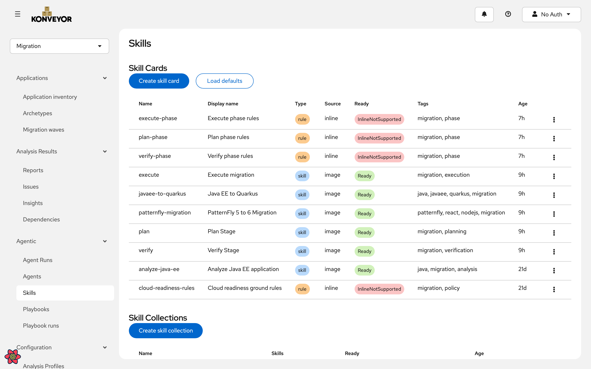
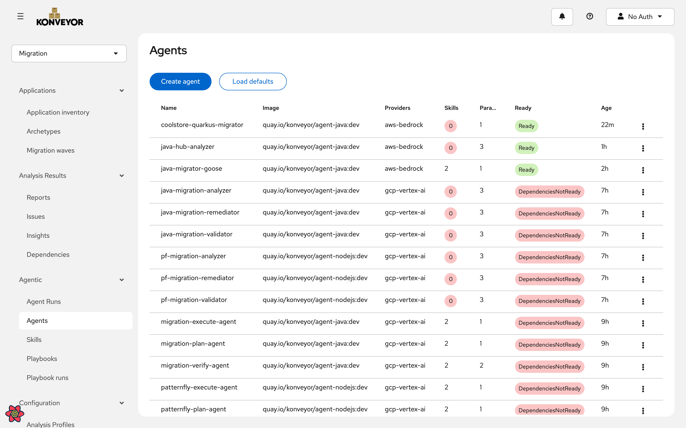
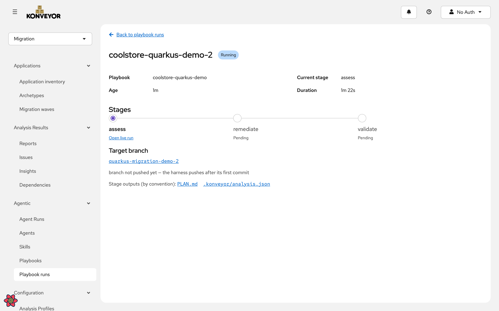
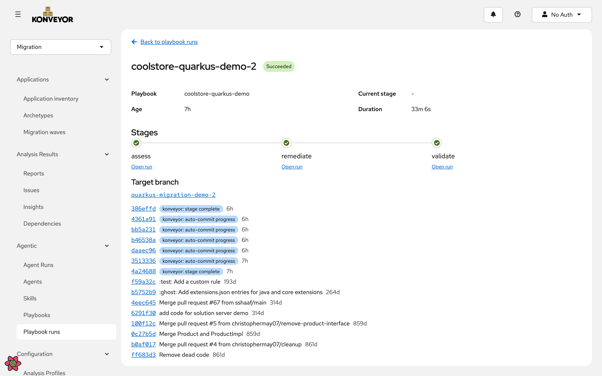
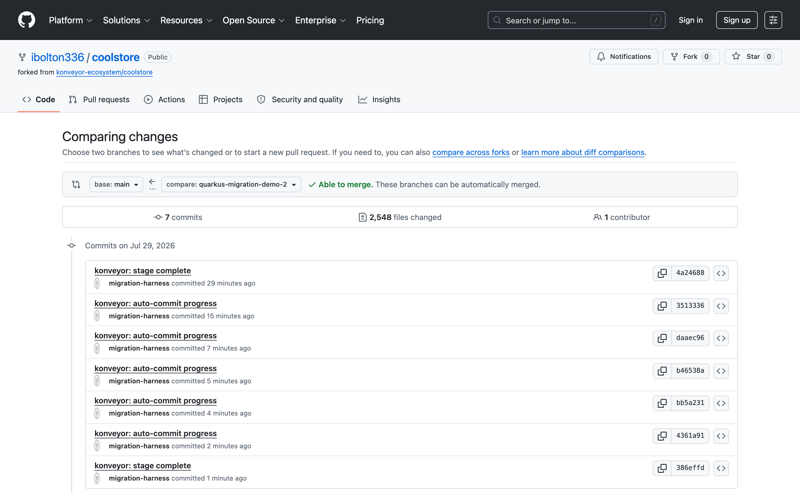

Real static analysis against konveyor.io/target=quarkus: EJB annotations, transaction boundaries, the pom, persistence config. This is the Konveyor everyone already trusts — it tells you what is wrong.

Migration know-how lives in versioned Skills. An Agent is a governed capability: an image, declared providers, declared params. A Workload is the process. Credentials never appear in a spec — they resolve from Hub identities at run time.


A single AgentWorkloadRun. Each stage is its own sandboxed pod with a fresh clone; the shared target branch on the fork is the entire handoff between them. No shared volume, no hidden state.

The harness pulls the Hub's analysis into the workspace as .konveyor/analysis.json before the agent starts. The plan it commits is grounded in those findings — ee-to-quarkus-00020, javaee-pom-to-quarkus-00010 — mapped to real files.
Working the plan step by step: the pom rebuilt on the Quarkus BOM, persistence.xml folded into application.properties, EJBs to CDI, transactions annotated, the JMS MDBs rewritten onto messaging channels.
mvn package, then actually boot the jar and curl the endpoints. Compile-only gates wave through apps that cannot start — CDI scope errors and messaging wiring failures only surface at startup.
One workload run, start to finish, against a real application in the Hub — with every commit on the branch traceable back to the stage that made it.

The branch is on GitHub, able to merge, waiting for review. The platform does the migration; it does not decide the migration is correct.
